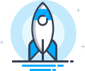
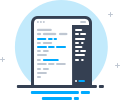
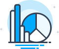
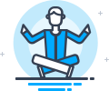

Firework от Startpack
Самый быстрый доступ к веб-приложениям
Firework превращает веб-приложения и сайты в приложения для компьютера. Они быстро открываются, закрепляются на панель задач, между ними легко переключаться.
Разработано для активных пользователей веб-приложений — менеджеров, предпринимателей, аналитиков, программистов, фрилансеров, дизайнеров.
Инструкция
Загрузить FireworkДля Windows 7/8/10
Открывайте веб-приложения и сайты в отдельном окне, как обычные приложения, и никогда не теряйте их среди вкладок браузера.
Закрепляйте избранные веб-приложения на панели задач, чтобы всегда иметь их под рукой.
Мгновенно переключайтесь на открытые веб-приложения, выбирая их на панели задач или пользуясь горячими клавишами.
-

Скорость
Быстро открывайте нужные веб-приложения и сайты, работайте быстрее и легче, экономьте время.
-

Удобство
Используйте веб-приложения как обычные программы. Легко переключайтесь, открывайте окна рядом, применяйте горячие клавиши.
-

Продуктивность
Не отвлекайтесь на случайно открытые сайты, берегите внимание и оставайтесь сконцентрированными на задачах. Достигайте большего!
-
Почему Firework лучше вкладок браузера?
Используемые в работе веб-приложения должны быть под рукой, но браузеры одинаково показывают вкладки с веб-приложениями и вкладки со страницами, открытыми во время веб-сёрфинга. Приходится постоянно искать вкладки с веб-приложениями или открывать их заново.
-
Почему Firework лучше панели закладок?
Ссылка на веб-приложение на панели закладок удобна для первого открытия. В остальное время приложение уже открыто, и его нужно искать среди вкладок. Закладка всегда открывает новую вкладку, это не даёт продолжить задачу и добавляет хаоса.
-
Почему Firework лучше закреплённых вкладок?
Нужно следить, чтобы не закрыть браузер с закреплёными вкладками, если у него открыто другое окно. Из-за этого закреплённые вкладки пропадают. Вам нужно всё время восстанавливать потерянные закреплённые вкладки.
-
Почему Firework лучше стартовых страниц браузеров и быстрых ссылок?
Стартовые страницы браузеров имеют те же недостатки, что и панель закладок. При этом в некоторых браузерах (Google Chrome) загрузка стартовой страницы происходит несколько секунд.
-
Почему Firework лучше виртуальных рабочих столов?
Будем откровенны, когда мы работаем за компьютером, мы просто хотим работать без помех. Виртуальные столы вынуждают нас отвлекаться на них, вспоминать в каком столе мы находимся и в каком столе мы открыли приложение, которое сейчас так нужно.
-
Почему Firework лучше родных приложений онлайн-сервисов?
Разработчики веб-приложений редко создают версии для рабочего стола, а такие версии имеют урезанную функциональность и непривычный интерфейс. Используйте Firework, чтобы получить преимущества десктопного приложения и в привычном виде.
-

Никаких инноваций
Firework это приложение на базе Chromium, в нём нет сложных технологий или изобретений. Firework — удобный инструмент экономии времени и внимания.
-
Никакой мобильности
К чёрту стратегию Mobile First! Мы смотрим по сторонам и видим, что 84 % нормальных людей выполняют повседневные рабочие дела на персональном компьютере.
-
Никакого ажиотажа
Firework не связан с модными трендами вроде чат-ботов или блокчейнов. Firework придумали 5 лет назад, но он полезен и будет полезен в обозримом будущем.
Начни жить продуктивнее!
Загрузить FireworkДля Windows 7/8/10